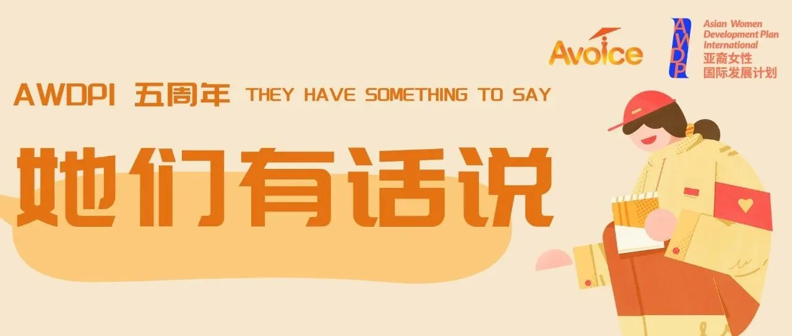
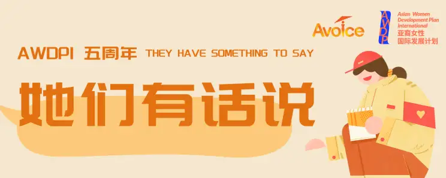

当生活被性别暴力的阴影笼罩，她们的声音如何被听见？她们的创伤如何被抚平？AWDPI通过五载耕耘交出了一份由“专业支持、持续赋能、温暖包容”写就的答卷。这不是我们的独白，而是无数幸存者和支持者的声音。她们曾身处黑暗，却依然愿意为仍在淋雨的人撑伞。
“AWDPI是陪我走过那一段路的撑伞人。”
“AWDPI让我明白不要责备自己，接纳任何状态的自己。”
“AWDPI帮助我开拓视野，进一步思考反暴力的实践。”
“在这里我是一个完整的人，不是受害者编号。”
“一定要坚持尝试向外求助，即使求助失败也不要断然放弃！”
五年来，AWDPI已经走过全球30+国家和地区，以“参与、包容、赋能”为使命，搭建起一张覆盖法律支持、心理援助、社群联结三位一体的全球救助网络。
五年来，
我们累计服务超1000名性别暴力幸存者，
推动40份跨国研究报告落地，
联结联合国、政府机构与学术组织
共筑反暴力联盟。
请让勇敢成为更多人的选择！
如果你或身边的人需要帮助，
请记住：你不孤单。
关注我们，一起守护更多海外亚裔女性
我们俯身倾听、默默陪伴，
这些声音和支持
编织成一个个永不撤离的港湾。
我们致敬每一位走出暴力阴霾，
以勇气和坚韧点起微光的女性，
让我们以更坚实的步伐，
为女性创造一个爱与平等的世界。
视频策划｜尤思玥
视频制作｜加贝 屠晨蕊 陈心怡
个案支持｜彭诗云 卢湉悦
撰稿 | 王雨涵
编辑 | 伊哲
排版&封面｜池一诺